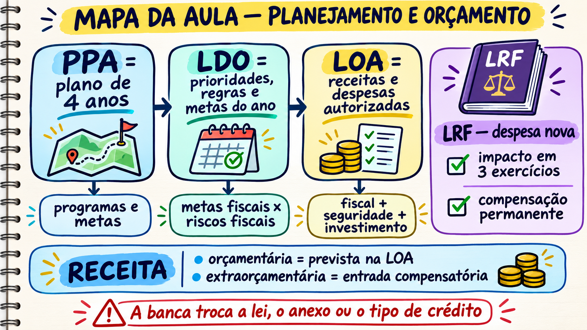
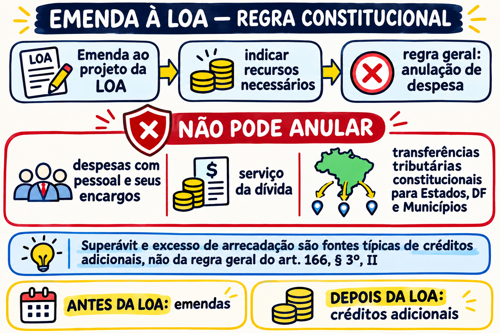

Metas fiscais da LDO, responsabilidade na criação de despesa (LRF), emendas à LOA, conceitos de receita e créditos adicionais
Ao final você deve conseguir olhar um item Certo/Errado sobre orçamento e responder: de qual das três leis é esse conteúdo, quem manda em quem, e qual regra da LRF ou da Constituição a banca está testando.
| Bloco | Pergunta que ele responde | Palavra-chave da prova |
|---|---|---|
| 0. Base zero | O que é orçamento público e como PPA, LDO e LOA se encaixam? | plano, diretriz, orçamento |
| A. LDO e metas fiscais | O que a LDO diz e o que vai em cada anexo? | metas × riscos fiscais, limitação de empenho |
| B. Despesa nova (LRF) | O que é preciso provar antes de criar uma despesa? | três exercícios, compensação permanente |
| C. Emendas à LOA | De onde o parlamentar pode tirar o dinheiro? | anulação de despesa |
| D. Receita pública | O que é receita orçamentária e como se classifica? | prevista na LOA, estágios |
| E. Créditos adicionais | Que tipo de crédito para cada situação? | suplementar, especial, extraordinário |
| F. PPA | Qual o elo PPA–LOA e quem se ajusta a quem? | programa, ação, consonância com o PPA |
| G. LDO e os Poderes | Quem fixa os limites das propostas dos Poderes? | art. 99, ajustes do Executivo |
| H. LOA | Exclusividade, totalidade e orçamento autorizativo | três orçamentos, contingenciamento |
Cada lei obedece à anterior. A LRF e a Constituição colocam regras em cada degrau.
1) Aposte antes de ler. 2) Leia a explicação e a analogia. 3) Veja o cenário no setor público e a tabela que liga a história ao conceito. 4) Compare o exemplo certo e o errado. 5) Recupere sem olhar e explique com suas palavras antes de abrir a resposta. A ajuda diminui ao longo da aula (alta → nenhuma): nos últimos blocos você responde sem dica.
Um termo com sublinhado pontilhado é adiantado: aparece só como ponte e é ensinado de verdade no bloco indicado. Lá o contraste volta, em uma caixa 🔁 Retomada.
Palavras como deve, pode, apenas, só, exclusivamente, sempre, nunca são as favoritas da banca. Elas não condenam nem salvam o item sozinhas, por isso a aula as destaca:
verde a palavra forte aparece e a afirmação está Certa (ex.: "Deve indicar os recursos necessários, admitidos apenas os provenientes de anulação de despesa");
vermelho a palavra aparece em afirmação Errada (ex.: "o orçamento é exclusivamente autorizativo");
amarelo cuidado: vale em regra, mas há exceção ou condição (ex.: "a LOA é só para prever receita e fixar despesa", com duas exceções).
No caderno de questões nada é colorido, para você decidir sozinho. Depois do envio, o gabarito comentado traz as cores.
Problema. A prefeita promete construir uma escola, mas o município não planejou o projeto nem reservou recursos.
Decisão. A equipe inclui o objetivo e o programa no PPA, transforma a escola em prioridade anual na LDO e coloca a dotação concreta na LOA.
Consequência. A obra passa a ter direção de médio prazo, prioridade para o ano e autorização orçamentária. Se pulasse uma etapa, haveria plano sem dinheiro ou gasto sem coerência.
| Na história | No conceito formal |
|---|---|
| Objetivo de construir a escola | PPA: direção, programa e meta de médio prazo |
| Prioridade para o próximo ano | LDO: prioridades e regras para elaborar a LOA |
| Valor reservado para a obra | LOA: previsão da receita e fixação da despesa |
Imagine uma família que quer comprar a casa própria, pagar a faculdade do filho e viver bem no dia a dia.
| PPA | LDO | LOA | |
|---|---|---|---|
| Horizonte | 4 anos (começa no 2º ano do mandato e termina no 1º ano do mandato seguinte) | 1 ano (orienta a LOA do ano seguinte) | 1 ano (o exercício financeiro) |
| O que traz | Diretrizes, objetivos e metas para despesas de capital, e para programas de duração continuada | Metas e prioridades, regras para a LOA, mudanças na legislação tributária, política das agências de fomento; metas e riscos fiscais (LRF) | Orçamento fiscal, orçamento da seguridade social e orçamento de investimento das estatais |
| Pergunta que responde | "Para onde vamos?" | "O que priorizar e com quais regras neste ano?" | "Quanto entra e quanto se gasta, e em quê?" |
| Projeto | Enviado ao Congresso até | Devolvido para sanção até |
|---|---|---|
| PPA | 4 meses antes do fim do 1º exercício do mandato (31 de agosto) | fim da sessão legislativa (22 de dezembro) |
| LDO | 8 meses e meio antes do fim do exercício (15 de abril) | fim do 1º período da sessão (17 de julho) |
| LOA | 4 meses antes do fim do exercício (31 de agosto) | fim da sessão legislativa (22 de dezembro) |

Resumo em uma linha: o exercício financeiro é o período de tempo em que o orçamento vale (um ano); o ciclo orçamentário é o caminho inteiro do orçamento, do primeiro rascunho até a conferência das contas (mais de um ano).
Passo a passo com a LOA de 2027 (cada passo responde a uma pergunta que a prova faz):
| Passo | Pergunta | Resposta |
|---|---|---|
| 1 | Em que período a LOA de 2027 vale e é executada? | De 1º de janeiro a 31 de dezembro de 2027. Isso é o exercício financeiro; ele coincide com o ano civil (Lei 4.320/1964, art. 34). |
| 2 | Quando o projeto dessa LOA é feito e votado? | Em 2026, um ano antes. O Executivo envia o projeto ao Congresso até 31 de agosto (4 meses antes do fim do exercício) e o Congresso o devolve para sanção até 22 de dezembro (ADCT, art. 35, §2º, III). A elaboração e a aprovação acontecem fora do exercício de 2027. |
| 3 | Quando se julgam as contas de 2027? | Em 2028, depois que o exercício terminou. O controle acompanha a execução o tempo todo, mas a prestação e o julgamento das contas do exercício vêm depois. |
| 4 | Então qual é a duração de cada um? | Exercício: 1 ano, de 1º/1 a 31/12. Ciclo da LOA de 2027: começa em 2026, passa por 2027 e termina em 2028, ou seja, toca três anos civis. |
| 5 | Dentro do exercício, o que pertence a ele? | As receitas nele arrecadadas e as despesas nele legalmente empenhadas (Lei 4.320, art. 35). |
Repare no passo 2 e no passo 3: a primeira e a última fase do ciclo estão fora do exercício. Só a execução está inteira dentro dele. Por isso são conceitos diferentes, e não sinônimos.
| Exercício financeiro | Ciclo orçamentário | |
|---|---|---|
| O que é | Período em que o orçamento é executado | Sequência das fases: elaborar, aprovar, executar, controlar e avaliar |
| Duração | 1 ano (1º/1 a 31/12) | Mais de 1 ano (toca 3 anos civis) |
| Exemplo | Exercício de 2027 | Ciclo da LOA de 2027 (2026 a 2028) |
| De onde vem | Lei 4.320, art. 34 (coincide com o ano civil) | Conceito da doutrina; as fases vêm de várias normas (CF arts. 165 a 169 e Lei 4.320) |
Sem olhar o texto: o ciclo orçamentário da LOA de 2027 começa e termina em que anos? E o exercício financeiro dela?
Dica: Conte os anos: antes do exercício, durante e depois.
O ciclo vai de 2026 (elaboração e aprovação) a 2028 (julgamento das contas), passando pela execução em 2027. O exercício financeiro é só 2027, de 1º de janeiro a 31 de dezembro (Lei 4.320, art. 34).
Explique com suas palavras. Por que "ciclo orçamentário" e "exercício financeiro" não são sinônimos?
Porque o exercício é só o ano em que o orçamento é executado, enquanto o ciclo inclui também a elaboração e a aprovação (antes) e o controle e o julgamento das contas (depois), e por isso dura mais de um ano.
A LDO traz dois anexos: Metas Fiscais e Riscos Fiscais. Aposte: um "passivo contingente" (dívida que só vira gasto se um fato acontecer, como perder uma ação judicial) entra em qual anexo?
No anexo de Riscos Fiscais (LRF art. 4º, §3º). O anexo de Metas Fiscais traz as metas anuais de receitas, despesas, resultados e dívida.
A LRF pede que a LDO trate também de equilíbrio entre receitas e despesas, critérios e forma de limitação de empenho, normas de controle de custos e avaliação de resultados dos programas e condições para transferências a entidades públicas e privadas. Além disso, a LDO traz dois anexos que a banca adora trocar:
O item Certo lista o conteúdo da LDO de forma literal. O item Errado costuma trocar a lei (passa para o PPA o que é da LDO) ou o anexo (metas × riscos), ou usa palavra absoluta ("exclusivamente").
Certo: A LDO estabelece critérios e forma de limitação de empenho.
Errado: A LOA estabelece os critérios e a forma de limitação de empenho.
Regra do jogo do ano = LDO; lista de valores = LOA. A banca troca a lei (TROCA_TERMO).
Problema. A LDO de Rio Claro fixou uma meta de resultado primário positivo de R$ 20 milhões. No fim do bimestre, a arrecadação ficou abaixo do previsto e a meta está em risco.
Decisão. A secretária de Planejamento quer manter todas as obras. O controlador lembra que a própria LDO traz os critérios para limitar o empenho. Em até 30 dias, a prefeitura limita empenho e movimentação financeira nas despesas que podem esperar, seguindo esses critérios.
Consequência. A meta é preservada sem corte improvisado, e a folha e a dívida seguem pagas. Se ninguém agisse, a prefeitura descumpriria a regra da LRF e da LDO.
| Na história | No conceito formal |
|---|---|
| Meta de resultado no papel | Anexo de Metas Fiscais da LDO |
| Receita que não veio | Verificação bimestral e limitação de empenho (LRF art. 9º) |
| Regra para escolher o que adiar | Critérios fixados na LDO (LRF art. 4º, I, b) |
Cite os dois anexos da LDO e diga em qual ficam as metas anuais e em qual ficam os passivos contingentes.
Dica: Meta = onde queremos chegar; risco = o que pode nos desviar.
Anexo de Metas Fiscais: metas anuais. Anexo de Riscos Fiscais: passivos contingentes e outros riscos. Trocar os dois é a pegadinha CONCEITO_MISTURADO.
Explique com suas palavras. Por que a LDO precisa trazer critérios de limitação de empenho?
Porque, se a receita frustrar a meta, o gestor precisa de uma regra prévia e objetiva para decidir o que adiar, em vez de cortar no improviso.
Uma gratificação será criada agora para ser paga todo ano, sem data para acabar. Além de estimar o impacto financeiro e declarar que cabe na LOA, o que mais a LRF exige? Aposte.
Por ser despesa obrigatória de caráter continuado (mais de 2 exercícios), é preciso demonstrar que não afeta as metas fiscais e compensar com aumento permanente de receita ou redução permanente de despesa (LRF art. 17).
Antes de assumir uma conta que vai se repetir, a família precisa provar que ela cabe no orçamento de agora e dos próximos anos. Se não provar, o compromisso é irregular. A LRF faz exatamente isso para o governo.
| Passo | Situação | O que a LRF exige |
|---|---|---|
| 1 | O governo cria um benefício que custa R$ 10 milhões por ano a partir de 2027. | Estimar o impacto no exercício em que entra em vigor e nos dois seguintes: 2027, 2028 e 2029 (são três anos). Art. 16, I. |
| 2 | O gestor assina sem a estimativa. | A despesa é considerada não autorizada, irregular e lesiva ao patrimônio público (art. 15). |
| 3 | O benefício é permanente (dura mais de dois exercícios). Vira despesa obrigatória de caráter continuado (art. 17). | Além da estimativa, comprovar que não afetará as metas de resultados fiscais e compensar os efeitos com aumento permanente de receita ou redução permanente de despesa. |
| 4 | Vender um imóvel para pagar o benefício. | Não serve: a receita é pontual, não permanente. |
| 5 | Subir alíquota de um tributo, ampliar a base de cálculo ou criar tributo; ou extinguir um programa de custo equivalente. | Serve: a receita é permanente (art. 17 §3º) ou a despesa cai de forma permanente. |
Certo: Compensar com aumento permanente de receita (por exemplo, nova alíquota) ou com redução permanente de despesa.
Errado: Compensar com receita pontual obtida durante a execução, como a venda de um imóvel.
O que vale é a permanência: despesa que se repete exige compensação que também se repete (DETALHE_NUMERICO e ABSOLUTO rondam este item).
Problema. O secretário de Saúde de Vila Nova cria uma gratificação permanente de R$ 3 milhões por ano para a enfermagem, a partir de 2027.
Decisão. Ele manda pagar sem estimar o impacto de 2027 a 2029. A controladoria pergunta qual receita nova ou corte permanente sustenta a despesa, e ele responde: a venda de um prédio velho.
Consequência. A despesa é considerada não autorizada, irregular e lesiva ao patrimônio público (art. 15). Venda de imóvel é receita pontual e não compensa gasto permanente. O caminho certo: estimar o impacto, declarar a adequação à LOA, ao PPA e à LDO, provar que não afeta as metas e compensar com algo permanente.
| Na história | No conceito formal |
|---|---|
| Gratificação para sempre | Despesa obrigatória de caráter continuado (mais de 2 exercícios) |
| Estimar 2027 a 2029 | Impacto no exercício de início e nos 2 seguintes (art. 16, I) |
| Venda do prédio | Receita pontual: não é compensação permanente |
| Pagar sem passos | Despesa não autorizada, irregular e lesiva (art. 15) |
Liste os 3 passos da despesa obrigatória continuada e diga o que torna válida uma compensação.
Dica: Os passos 1 e 2 valem para toda despesa nova; o 3 é o extra do "continuado".
1) Estimativa de impacto no exercício e nos 2 seguintes. 2) Declaração do ordenador: cabe na LOA e é compatível com PPA e LDO. 3) Provar que não afeta as metas e compensar com aumento permanente de receita ou redução permanente de despesa. Compensação válida = permanente.
Explique com suas palavras. Por que uma receita pontual não compensa uma despesa que se repete?
Porque a receita entra uma vez e acaba, mas a despesa continua todo ano, abrindo um buraco permanente.
Um deputado quer financiar uma emenda com o dinheiro destinado ao pagamento da dívida pública. Aposte: pode?
Não. A emenda deve indicar recursos de anulação de despesa, e a Constituição exclui pessoal e encargos, serviço da dívida e transferências tributárias constitucionais (CF art. 166, §3º, II).
O orçamento é uma torta fechada. Se alguém quer aumentar a fatia do saguão, precisa tirar de outra fatia. Não vale "inventar" dinheiro novo na emenda.
| Condição | Conteúdo |
|---|---|
| I | A emenda precisa ser compatível com o PPA e a LDO. |
| II | Deve indicar os recursos necessários, admitidos apenas os provenientes de anulação de despesa, excluídas as despesas de pessoal e encargos, serviço da dívida e transferências tributárias constitucionais. |
| III | Ou ser relacionada com a correção de erros ou omissões, ou com os dispositivos do texto do projeto. |
Certo: A emenda indica como fonte a anulação de dotação de outra despesa que não seja pessoal, dívida ou transferências constitucionais.
Errado: A emenda indica como fonte o saldo que sobrou em caixa no ano anterior.
Saldo de caixa e receita extra não são fonte de emenda ao projeto de LOA (ESCOPO). Onde eles valem, você vê no Bloco E, e lá este contraste volta.
Problema. Um deputado quer R$ 5 milhões para reformar um hospital regional e apresenta emenda ao projeto de LOA.
Decisão. Na primeira versão ele indica como fonte o saldo que sobrou em caixa no ano anterior. A comissão aponta o erro: dinheiro novo não serve de fonte para emenda. Na segunda, ele propõe cancelar a dotação de publicidade de um ministério. Também considerou tirar do serviço da dívida, mas desistiu.
Consequência. A primeira versão não pode ser aceita, e a segunda cumpre a regra: compatível com PPA e LDO, com fonte em anulação de outra despesa permitida. O dinheiro não nasceu do nada: outra fatia perdeu.
| Na história | No conceito formal |
|---|---|
| Cancelar a publicidade | Anulação de despesa (art. 166, §3º, II, a) |
| Não pode tirar da dívida | Exclusões: pessoal e encargos, serviço da dívida, transferências constitucionais |
| Hospital precisa estar no plano | Compatibilidade com PPA e LDO (art. 166, §3º, I) |
Quais são as 3 despesas que não podem ser anuladas para financiar emenda?
Dica: P-D-T: pessoal, dívida, transferências.
Dotações para pessoal e seus encargos, serviço da dívida e transferências tributárias constitucionais para Estados, Municípios e Distrito Federal.
Explique com suas palavras. Por que a emenda não pode "criar" dinheiro novo?
Porque a LOA é uma torta fechada: aumentar uma fatia exige tirar de outra, e só de fatias que a Constituição permite anular.

Uma empresa deposita caução para participar de uma licitação. Aposte: esse dinheiro é receita orçamentária?
Não. Entra no caixa, mas não é do governo: será devolvido. É ingresso extraorçamentário.
Receita é o dinheiro que entra. Mas nem todo dinheiro que entra no caixa "é do governo": a caução que um fornecedor deposita volta depois. Só o que está previsto na LOA é receita orçamentária.
| Corte | Para que serve | Exemplo |
|---|---|---|
| Orçamentária × extraorçamentária | Só a primeira consta da LOA | Imposto (orçamentária); caução (extra) |
| Corrente × de capital | Categoria econômica | Tributos (corrente); venda de bem (capital) |
| Originária × derivada | De onde vem o poder de arrecadar | Aluguel de imóvel (originária); tributo (derivada, vem da soberania) |
Certo: Receita orçamentária é aquela prevista na lei orçamentária anual.
Errado: Receita orçamentária é toda entrada de dinheiro no caixa do governo, inclusive cauções.
Entrar no caixa não basta: o que define é a previsão na LOA e o dinheiro ser do ente (ABSOLUTO: "toda").
Problema. Na mesma semana, o caixa de Rio Claro recebeu R$ 2 milhões de IPTU e R$ 500 mil de caução de um licitante.
Decisão. O contador quer tratar tudo como receita do mês e liberar R$ 2,5 milhões em gastos. O controlador separa as duas entradas.
Consequência. Só os R$ 2 milhões são receita orçamentária. Contar a caução como receita faria a prefeitura gastar um dinheiro que terá de devolver.
| Na história | No conceito formal |
|---|---|
| IPTU | Receita orçamentária corrente, tributária (derivada) |
| Caução | Ingresso extraorçamentário (devolvível) |
| Dinheiro que entra no caixa | Arrecadação, um dos estágios da receita |
Dê um exemplo de receita orçamentária e outro de extraorçamentária. A venda de um imóvel público é receita corrente ou de capital?
Dica: Pergunte: esse dinheiro é do governo ou está só de passagem?
Orçamentária: imposto. Extraorçamentária: caução. A venda de imóvel é receita de capital (alienação de bens).
Explique com suas palavras. Por que contar a caução como receita seria perigoso?
Porque faria o governo achar que tem dinheiro para gastar quando terá de devolvê-lo.
Uma enchente destrói pontes e o governo precisa de recursos imediatos que não estão na LOA. Aposte: que crédito adicional e por qual instrumento?
Crédito extraordinário, para despesa urgente e imprevisível (guerra, comoção interna, calamidade pública), aberto por medida provisória na União (CF art. 167, §3º).
No meio do ano a conta estoura. Em vez de refazer a planilha, abre-se um "crédito" para ajustar. O tipo depende de já existir ou não uma linha para esse gasto e de a despesa ser urgente e imprevisível.
| Tipo | Quando | Observações |
|---|---|---|
| Suplementar | Reforço de dotação que já existe | Pode ser autorizado na própria LOA (exceção ao princípio da exclusividade: a LOA só trata de receita e despesa, salvo essa autorização; veja o Bloco H) |
| Especial | Despesa para a qual não há dotação orçamentária específica | Exige lei específica; é o crédito de um órgão novo sem dotação |
| Extraordinário | Despesa urgente e imprevisível | Aberto por medida provisória |
Fontes admitidas para abrir crédito (Lei 4.320/1964 art. 43): superávit financeiro do exercício anterior, excesso de arrecadação, anulação de dotações e operações de crédito, sempre com indicação dos recursos (CF art. 167, V).
Certo: Crédito especial é aberto para despesa sem dotação orçamentária específica.
Errado: Crédito suplementar é aberto para despesas urgentes e imprevisíveis, como as decorrentes de calamidade pública.
Urgência e imprevisibilidade pertencem ao extraordinário; a banca troca o nome do tipo (TROCA_TERMO).
No Bloco C você viu que a emenda só aceita anular despesa e que o dinheiro "novo" fica de fora. Agora que você conhece o crédito adicional, dá para fechar o contraste: são dois momentos diferentes da vida do orçamento.
| Emenda ao projeto de LOA (Bloco C) | Crédito adicional (este bloco) | |
|---|---|---|
| Quando | Enquanto o Congresso ainda vota o projeto da LOA | Depois que a LOA foi aprovada e está sendo executada |
| Fontes aceitas (suplementar e especial) | Só anulação de despesa (excluídos pessoal, dívida e transferências) | Superávit financeiro do ano anterior, excesso de arrecadação, anulação de dotações e operações de crédito (Lei 4.320, art. 43) |
Certo: Um crédito suplementar aberto com o superávit financeiro do exercício anterior.
Errado: Uma emenda ao projeto de LOA que indica o superávit financeiro do exercício anterior como fonte.
É a pegadinha do Bloco C vista do outro lado: a banca pega uma fonte do crédito adicional e a atribui à emenda (ESCOPO). Item real nessa linha: Cebraspe, MPO 2024, cargo 4 (caderno 958_MPO_ANALISTA_004), gabarito Errado. https://cdn.cebraspe.org.br/concursos/MPO_24/arquivos/958_MPO_ANALISTA_004_01.PDF
Problema. O ministério gastou todos os R$ 10 milhões da merenda em setembro (a dotação existe, mas acabou). Em março criou um programa novo sem linha no orçamento. Em junho, uma enchente exigiu socorro imediato.
Decisão. Para cada caso ele pede um crédito diferente: reforçar a linha da merenda, abrir uma linha para o programa novo e agir já na enchente.
Consequência. Merenda: suplementar, por lei autorizativa, com fonte indicada. Programa novo: especial, por lei específica, com fonte indicada. Enchente: extraordinário, por MP, sem exigir fonte prévia indicada.
| Na história | No conceito formal |
|---|---|
| Reforçar linha existente | Crédito suplementar |
| Criar linha nova | Crédito especial |
| Emergência imprevisível | Crédito extraordinário |
| De onde vem o dinheiro | Lei 4.320, art. 43: superávit financeiro, excesso de arrecadação, anulação de dotações, operações de crédito |
Complete: suplementar ___, especial ___, extraordinário ___. Cite duas das quatro fontes do art. 43.
Suplementar reforça dotação existente; especial cria dotação nova; extraordinário atende urgência imprevisível. Fontes: superávit financeiro, excesso de arrecadação, anulação de dotações, operações de crédito.
Explique com suas palavras. Por que o extraordinário dispensa a espera por uma lei comum?
Porque a emergência não pode esperar o trâmite de uma lei ordinária; a medida provisória permite agir de imediato.
O elo entre o PPA e a LOA é o projeto ou o programa? Aposte.
O programa. Projeto é só um dos tipos de ação dentro do programa (os outros são atividade e operação especial).
Pense numa família que decide "em 4 anos queremos reformar a casa e quitar o carro". Isso é o PPA: o plano de médio prazo. Cada ano, a família escolhe o que cabe fazer (LDO) e separa o dinheiro (LOA). Se aparecer um plano novo (um consórcio de reforma, por exemplo), é ele que tem de caber no plano da família, e não a família que muda tudo para caber nele.
| Ponto | O que é | Base |
|---|---|---|
| O que o PPA define | De forma regionalizada: diretrizes, objetivos e metas para despesas de capital, as delas decorrentes e os programas de duração continuada | CF art. 165, §1º |
| Vigência | 4 anos: começa no 2º ano do mandato e vai até o 1º do mandato seguinte (continuidade administrativa) | ADCT art. 35, §2º, I |
| Investimento plurianual | Nenhum investimento que passe de um exercício pode começar sem estar no PPA ou sem lei que o autorize | CF art. 167, §1º |
No PPA, o programa é um pacote de ações coordenadas para resolver um problema ou atender uma necessidade. As ações orçamentárias são de três tipos: projeto (começo, meio e fim, ex.: construir um hospital), atividade (contínua, ex.: manter o hospital) e operação especial (não gera produto, ex.: pagar dívida). Quando a LOA é feita, o programa do PPA reaparece, detalhado em ações.
A CF (art. 165, §4º) manda que os planos e programas nacionais, regionais e setoriais sejam elaborados em consonância com o PPA. A seta vai do PPA para os planos setoriais. Se um plano decenal setorial é aprovado, é ele que deve ser compatível com o PPA; o PPA não é "adaptado" para o plano. Do mesmo modo, a LDO e a LOA devem ser compatíveis com o PPA, e os orçamentos fiscal e de investimento são compatibilizados com ele (art. 165, §7º).
Certo: LOA e PPA se conectam pelos programas; as ações (projeto, atividade, operação especial) detalham cada programa.
Errado: A LOA se integra ao PPA por meio dos projetos.
Projeto é só um tipo de ação; o elo é o programa (TROCA_TERMO).
Problema. A Secretaria de Mobilidade aprova um plano setorial com metas duas vezes maiores que as do PPA 2026–2029.
Decisão. O dirigente diz que "o plano manda e o PPA se ajusta". O Planejamento responde que planos setoriais devem ser elaborados em consonância com o PPA (CF art. 165, §4º) e propõe duas saídas: reduzir as metas do plano ao PPA ou, se forem essenciais, enviar projeto de lei para alterar o PPA.
Consequência. A hierarquia se preserva: o plano se ajusta ao PPA, e não o contrário. Meta sem lastro no PPA ficaria sem programa na LOA e sem dotação.
| Na história | No conceito formal |
|---|---|
| PPA | Lei de médio prazo (4 anos), com programas e metas |
| Plano setorial | Se ajusta ao PPA |
| Mudar o PPA | Exige lei |
| Programa | Elo entre PPA e LOA |
Ordene da maior para a menor agregação: ação, função, programa, subfunção. Cite os três tipos de ação.
Função → subfunção → programa → ação. Ações: projeto, atividade, operação especial.
Explique com suas palavras. Por que um plano setorial não pode "mandar" no PPA?
Porque a Constituição exige que planos setoriais sejam elaborados em consonância com o PPA, que é a lei de médio prazo de toda a administração.
Um tribunal federal envia ao Executivo uma proposta orçamentária acima do limite da LDO. Aposte: o Executivo rejeita a proposta ou a ajusta?
Ajusta, para consolidar a proposta única (CF art. 99, §4º). O limite vem da LDO.
Quem monta a proposta do orçamento é o Executivo, mas Judiciário, Legislativo, Ministério Público e Defensoria também têm despesas. A combinação é: cada um faz sua proposta, mas dentro dos limites que a LDO fixa. É uma regra de condomínio: o síndico (Executivo) consolida, mas todos seguem o teto combinado antes.
| Regra | Base |
|---|---|
| O Judiciário elabora sua proposta dentro dos limites da LDO | CF art. 99, §1º |
| Se a proposta vier em desacordo com os limites, o Executivo faz os ajustes necessários para consolidar o projeto de LOA | CF art. 99, §4º |
| Mesma lógica para Legislativo, Ministério Público e Defensoria | CF arts. 51, 52, 127 e 134 |
| A LDO alcança todos os Poderes e órgãos autônomos, não só o Executivo | CF art. 165, §2º |
Certo: O Judiciário elabora sua proposta orçamentária dentro dos limites estipulados na LDO.
Errado: A LDO define exclusivamente regras para as despesas do Executivo e do Legislativo.
Palavra absoluta ("exclusivamente") + omissão do Judiciário, do MP e da Defensoria (ABSOLUTO).
Problema. Um tribunal federal manda a proposta com valor acima do limite fixado pela LDO.
Decisão. O Executivo, que consolida o projeto de lei orçamentária, faz os ajustes necessários para encaixar a proposta nos limites e envia um único projeto ao Congresso.
Consequência. O orçamento continua único e consistente com a LDO, em vez de cada Poder impor o seu valor.
| Na história | No conceito formal |
|---|---|
| Limite combinado em assembleia | LDO fixa os limites (CF art. 99, §1º) |
| Síndico consolida as contas | Executivo consolida a proposta única |
| Pedido acima do limite | Ajuste pelo Executivo (art. 99, §4º) |
Quem fixa os limites da proposta de cada Poder e quem consolida o projeto? Que outros órgãos também enviam proposta própria?
A LDO fixa os limites e o Executivo consolida. Legislativo, Judiciário, Ministério Público e Defensoria propõem dentro desses limites.
Explique com suas palavras. Por que existe um orçamento só, mesmo com vários Poderes?
Porque há uma única lei orçamentária; cada Poder propõe a sua parte, mas o Executivo consolida tudo num projeto só.
A LOA pode trazer um artigo autorizando reajuste de salários do funcionalismo? Aposte.
Não. Pelo princípio da exclusividade (CF art. 165, §8º), a LOA trata de previsão de receita e fixação de despesa. Exceções: autorização para créditos suplementares e para operações de crédito, inclusive por antecipação de receita (ARO).
A LOA é só para prever receita e fixar despesa. Não se pode "pegar carona" na LOA para mudar outras leis (as famosas "caudas orçamentárias"). A CF (art. 165, §8º) permite apenas duas exceções: autorização para abrir créditos suplementares e contratação de operações de crédito, inclusive por antecipação de receita (ARO). Sem pegadinha: se o item copia a regra e cita "ressalvando as hipóteses previstas na Constituição", está Certo.
A totalidade diz que todas as receitas e despesas entram no orçamento, em um único documento. Os três orçamentos são partes dessa mesma LOA, não leis separadas. Por isso "a LOA não segue a totalidade porque tem três orçamentos" é Errado: causa e consequência inventadas.
No Brasil o orçamento é, em regra, autorizativo: a LOA dá permissão para gastar, não obriga a gastar tudo. Por isso o Executivo pode limitar o empenho (contingenciar) quando a receita não sustenta as metas da LDO (LRF, art. 9º). Mas há exceções: despesas obrigatórias (pessoal, benefícios legais, dívida) não podem ser contingenciadas livremente (art. 9º, §2º), e as emendas individuais e de bancada têm execução obrigatória pela CF.
Certo: A LOA pode conter autorização para abrir créditos suplementares, exceção ao princípio da exclusividade.
Errado: O orçamento é exclusivamente autorizativo, o que permite contingenciar qualquer despesa.
"Exclusivamente" e "qualquer": palavras absolutas que derrubam o item (ABSOLUTO).
Problema. A LOA reservou R$ 10 milhões para pavimentar ruas, mas em maio a receita caiu e a meta de resultado ficou em risco.
Decisão. O secretário insiste: "está na LOA, é obrigação". O Planejamento aplica a limitação de empenho nas despesas discricionárias, adia a obra e mantém folha e dívida.
Consequência. A obra espera. A LOA autoriza o gasto, mas isso não o torna obrigatório em todos os casos: despesas obrigatórias e emendas impositivas têm tratamento diferente.
| Na história | No conceito formal |
|---|---|
| Está na LOA | Caráter autorizativo (com exceções) |
| Adiar a obra | Limitação de empenho em despesa discricionária (LRF art. 9º) |
| Folha e dívida seguem | Despesas obrigatórias não são contingenciadas livremente (art. 9º, §2º) |
Quais os três orçamentos que compõem a LOA e quais as duas exceções à exclusividade?
Orçamento fiscal, da seguridade social e de investimento das estatais. Exceções: autorização para créditos suplementares e para operações de crédito (inclusive ARO).
Explique com suas palavras. Por que "exclusivamente autorizativo" é uma palavra-armadilha?
Porque ignora que há despesas obrigatórias e emendas impositivas que não se cortam livremente; palavra absoluta costuma tornar o item Errado.
| Tema | Item Certo costuma ser... | Item Errado costuma ser... | Pegadinha típica |
|---|---|---|---|
| LDO e metas fiscais | Lista literal do conteúdo da LDO (CF 165 §2º, LRF art. 4º) | Passa o conteúdo da LDO para o PPA; troca anexo de metas por riscos | CONCEITO_MISTURADO, ABSOLUTO |
| Despesa nova (LRF 16 e 17) | Estimativa em três exercícios + compensação permanente | "De forma exclusiva" por receita; compensação "durante a execução" | ABSOLUTO, PARTE_CERTA_PARTE_ERRADA |
| Emendas à LOA | Indicar recursos por anulação de despesa | Admitir superávit financeiro ou "receitas erradas" como fonte | ESCOPO, TROCA_TERMO |
| Receita | Receita orçamentária é a prevista na LOA | Previsão como estágio da execução | TROCA_TERMO |
| Créditos adicionais | Cada tipo com a descrição correta | Descreve um tipo com o nome do outro | TROCA_TERMO |
Na prova P1 (e nas demais), item errado desconta o mesmo que o certo vale. Em branco vale zero. Veja o resultado esperado em 10 itens que você chuta com a mesma confiança p em cada um:
| Sua confiança | Acertos esperados | Erros esperados | Saldo (acertos − erros) |
|---|---|---|---|
| 50% (moeda) | 5 | 5 | 0 — tanto faz |
| 60% | 6 | 4 | +2 — vale |
| 70% | 7 | 3 | +4 — vale |
| 40% | 4 | 6 | −2 — deixe em branco |
Para cada item o saldo esperado é p × (+1) + (1 − p) × (−1) = 2p − 1. Ele é positivo só se p > 50%. p é a chance de você acertar; (1 − p) a de errar.
9 itens reais do Cebraspe (Caderno 1). Os Cadernos 2 e 3, com mais 17 itens associados ao conteúdo desta aula, estão em PDFs separados. Julgue Certo ou Errado; o gabarito comentado vem depois. Cada item traz tema, nível, referência e a URL da prova oficial (PDF do CDN do Cebraspe); o gabarito definitivo está na URL indicada em "Gab.".
A lei de diretrizes orçamentárias (LDO) compreende as metas e prioridades da administração pública, estabelece as diretrizes de política fiscal e respectivas metas, em consonância com trajetória sustentável da dívida pública, orienta a elaboração da LOA, dispõe sobre as alterações na legislação tributária e estabelece a política de aplicação das agências financeiras oficiais de fomento.
Receita orçamentária é toda receita que tenha sido prevista na lei orçamentária anual.
O anexo de metas fiscais da lei de diretrizes orçamentárias (LDO) deverá conter quadro demonstrativo do cálculo da meta do resultado primário, em que se evidenciem os principais agregados de receitas e despesas, os resultados, comparados com os valores programados para o exercício em curso e os realizados nos dois exercícios anteriores, e as estimativas para o exercício a que se referem e para os subsequentes.
As despesas decorrentes da criação de novos órgãos públicos inexistentes quando da aprovação da LOA do exercício serão suplantadas por meio de créditos adicionais suplementares.
Os créditos adicionais especiais são aqueles destinados a despesas para as quais não haja dotação orçamentária específica, inclusive as urgentes e imprevistas.
A ampliação de despesa obrigatória por prazo superior a dois exercícios financeiros deverá ser precedida da estimativa do seu impacto orçamentário-financeiro no exercício em que deva entrar em vigor e nos dois subsequentes e da comprovação de que a despesa criada ou aumentada não afetará as metas de resultados fiscais, devendo, de forma exclusiva, seus efeitos ser compensados pelo aumento permanente de receita.
As emendas ao projeto de lei do orçamento propostas por parlamentares devem conter indicações dos recursos, que podem ser originados de anulações de despesas ou do superávit financeiro do exercício anterior.
A criação da despesa obrigatória de caráter continuado depende da compensação de seu impacto pelo aumento permanente da receita ou pela redução permanente da despesa, que poderá ser realizada durante a sua execução.
É vedada a aprovação de emendas parlamentares que acrescentem novas programações ao projeto de lei orçamentária anual e que não indiquem os recursos necessários, seja por meio de anulações de despesas, seja por meio de receitas erradas ou omitidas.
O Cebraspe não publica justificativa dos itens definitivos; os comentários abaixo apoiam-se na Constituição (arts. 165 a 167), na Lei 4.320/1964 e na LRF.
1 — Certo. Lista fiel do conteúdo da LDO (CF art. 165 §2º) somada à referência da LRF à trajetória sustentável da dívida. Item de cópia literal: não há troca de lei. Pegadinha-tipo: NORMA_LITERAL.
2 — Certo. Receita orçamentária é a que consta da LOA; por oposição, a extraorçamentária é a entrada compensatória (caução, retenção).
3 — Certo. Conteúdo do anexo de metas fiscais: quadro do resultado primário com agregados de receita e despesa, comparação com o exercício em curso e os dois anteriores e estimativas. Observe que o item fala de metas (e não de riscos) fiscais.
4 — Errado. Órgão novo não tem dotação específica na LOA; o instrumento é o crédito especial. O suplementar reforça dotação que já existe. TROCA_TERMO.
5 — Errado. "Urgentes e imprevistas" é a descrição do crédito extraordinário. O especial atende despesa sem dotação específica, sem o requisito de urgência e imprevisibilidade. TROCA_TERMO.
6 — Errado. A compensação pode ser feita por aumento permanente de receita ou por redução permanente de despesa (LRF art. 17). A expressão "de forma exclusiva" restringe indevidamente. ABSOLUTO.
7 — Errado. Para emendas ao projeto de LOA, a CF admite apenas recursos provenientes de anulação de despesa (art. 166 §3º, II). O superávit financeiro serve para abrir créditos adicionais, não para emendas. ESCOPO.
8 — Errado. A despesa obrigatória continuada é criada junto com a comprovação e a forma de compensação, que fazem parte da instrução do ato (LRF art. 17 §§1º e 2º). Deixar a compensação para "durante a execução" inverte a ordem. PARTE_CERTA_PARTE_ERRADA.
9 — Errado. A CF não proíbe emendas que indiquem recursos; proíbe as que não os indicam, e só admite a anulação de despesa como fonte (com exceções). "Receitas erradas ou omitidas" confunde duas coisas: erros ou omissões são hipótese de cabimento da emenda (art. 166 §3º, III), não fonte de recursos. Item difícil: o gabarito Errado resulta dessa combinação; o texto do item mistura os incisos II e III. TROCA_TERMO.